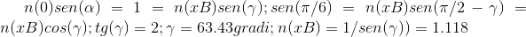
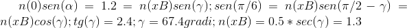
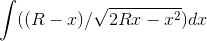

FedericoC.14 giu 2016, 22:48
Eccoci col \(79\)! :D
Si consideri un blocchetto trasparente, assimilabile a un parallelepipedo, posto con uno dei due lati più lunghi sull'asse delle ascisse e con uno dei due più corti (lungo \(d\)) su quello delle ordinate (praticamente nel grafico \(xy\) si ha un rettangolo con uno dei lati lunghi appartenente all'asse delle ascisse, uno dei lati corti appartenente all'asse delle ordinate e il vertice \(A\) centrato nell'origine).
L'indice di rifrazione di tale blocchetto varia secondo la relazione \(n=\frac{n_0}{1-(x/R)}\) dove \(n_0=1,2\) è l'indice di rifrazione in \(x_A=0\) e \(R=13cm\) è una costante.
Viene immesso verticalmente un raggio di luce in \(A\) che riemerge dalla parte superiore del blocchetto nel punto \(B\) con un angolo \(\alpha=\frac{\pi}{6}\) rispetto alla normale.
Si trovi:
a) l'indice di rifrazione \(n_B\) nel punto \(B\);
b) l'ascissa \(x_B\) del punto \(B\);
c) lo spessore \(d\) del blocchetto (altezza del rettangolo nel grafico \(xy\)).
FedericoC.16 giu 2016, 18:14
Il ragionamento dovrebbe essere corretto, per quanto riguarda la normale cui si fa riferimento è parallela all'asse \(y\), poiché in quel caso si deve considerare quella perpendicolare alla superficie limite tra i due mezzi, il blocchetto e l'aria ;)
FedericoC.17 giu 2016, 10:03
Per il primo punto la relazione cui sei arrivato è sbagliata, il secondo punto è quasi banale serve solo il valore numerico del primo e sostituire, per l'ultimo l'idea mi pare giusta, sarebbe il terzo modo in cui si può fare oltre ai due che ho trovato. Prova a fare i conti :D
FedericoC.17 giu 2016, 17:25
Rispondo comunque, dato che può essere utile per qualcuno che vuole provare. L'angolo di incidenza iniziale non è uguale a quello finale, viene detto nel testo che viene immesso verticalmente ;)
Francesco Mele18 giu 2016, 1:55
A me viene n(Xb)=1.118 . Non può essere accettabile come valore siccome n(x)>n(0), dato che x/R è una quantità sempre positiva.
Non capisco, però, dove sbaglio :?
Alpha è l'angolo che forma il raggio con l'asse x, dopo essere entrato nel blocchetto e gamma è l'angolo che il raggio di luce forma con l'asse delle x quando si trova in xB. Quindi, Il prodotto tra il seno dell'angolo che il raggio forma con l'asse x e n(x) si conserva. Siccome l'angolo di uscita è rispetto all'asse y, considero 90 - gamma.
Il ragionamento mi sembra molto semplice.
-
Allegati
-

- CodeCogsEqn.gif (3.48 KiB) Visto 6896 volte
FedericoC.18 giu 2016, 10:09
Alpha è l'angolo che forma il raggio con l'asse x, dopo essere entrato nel blocchetto e gamma è l'angolo che il raggio di luce forma con l'asse delle x quando si trova in xB.
Come ho detto nel post precedente il raggio viene immesso verticalmente, quindi l'angolo in A non può essere \(\alpha\).
Francesco Mele18 giu 2016, 10:36
Pensavo "verticalmente" nall'aria per poi venire rifratto dal blocchetto, scusa :shock: . Comunque, mi sembra molto strano ora. Se la luce viene immessa, non so come, verticalmente (parallela all'asse y) "all'interno" del blocchetto come fa a spostarsi verso destra? Lungo l'asse y l'indice di rifrazione è costante.
FedericoC.18 giu 2016, 10:58
Hint: dall'aria il raggio viene immesso verticalmente verso il blocchetto, pertanto non si ha rifrazione dall'aria al blocchetto, quindi nel punto A il raggio sarà verticale, ma l'angolo da considerare non sarà zero bensì novanta, poiché cambia la superficie su cui si ha rifrazione che è questa volta parallela al piano \(yz\).
Si può pensare anche che incidendo verticalmente il raggio incida con un angolo di novanta sul successivo strato \(dx\) dove l'indice di rifrazione si può considerare costante, ma comunque maggiore di \(n_0\).
Ora almeno i primi due punti dovrebbero essere chiari :)
Francesco Mele18 giu 2016, 11:27
Perfetto. ;)
n(xB)= 1.3 , è giusto?
FedericoC.18 giu 2016, 11:47
Si il primo c'è, vai col procedimento ;)
Francesco Mele18 giu 2016, 12:10
Il procedimento è lo stesso che avevo adottato precedentemente tranne per la parte iniziale: il prodotto iniziale viene 1.2 (grazie al tuo chiarimento) e non 1. Il prodotto si "conserva" per tutto il blocchetto, quindi, il prodotto iniziale è uguale a quello finale. Ora, siccome il raggio esce dalla parte superiore, la normale è parallela all'asse y, quindi, l'angolo di incidenza è (90gradi-gamma). Così impostando un semplicissimo sistema di due equazione ti trovi gamma e infine n(xB).
Ora faccio gli altri due punti.
(Vi prometto che imparerò a scrivere in LaTex al più presto ahah)
-
Allegati
-

- CodeCogsEqn.gif (3.48 KiB) Visto 5668 volte
FedericoC.18 giu 2016, 12:13
Perfetto, comunque per il \(LaTeX\) prova a tenere premuto sulle formule o cliccarle col mouse, in questo modo ti esce il codice con cui sono scritte. A me è stato molto utile per imparare ;)
Francesco Mele18 giu 2016, 13:31
Per il punto 2, xB=1 cm.
Per il punto, 3 ho considerato dy/dx=tg(alpha) e sen(alpha)*n(x)=1.2. Scrivendo sen(alpha) in funzione di tg(alpha) e poi andando a sostituire in quel sistemino di due equazioni, mi esce dy in funzione di x e dx. Per trovare l'altezza, devo integrare. E' una funzione un po' brutta (sempre non ho sbagliato i calcoli) e non riesco ad integrarla ahah.
Ps: scusa se non ho risposto subito, ma sono stato impegnato.
-
Allegati
-

- CodeCogsEqn.gif (990 Byte) Visto 5663 volte
FedericoC.18 giu 2016, 13:54
Il punto due va bene, per il tre la funzione che hai trovato è corretta e l'integrale è \(\sqrt{-(x-26)x}\) che tra zero e uno da \(5 cm\) che è corretto.
Ti passo il testimone della staffetta :D
Francesco Mele18 giu 2016, 15:14
Grazie per la staffetta! :D
Però, che cavolo, come ho fatto a non vedere quell'integrale composto notevole ahahah
Pubblico l'80-esimo problema al più presto! 8-)